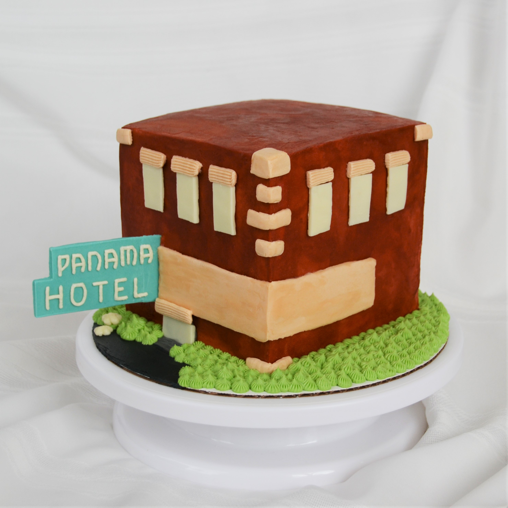
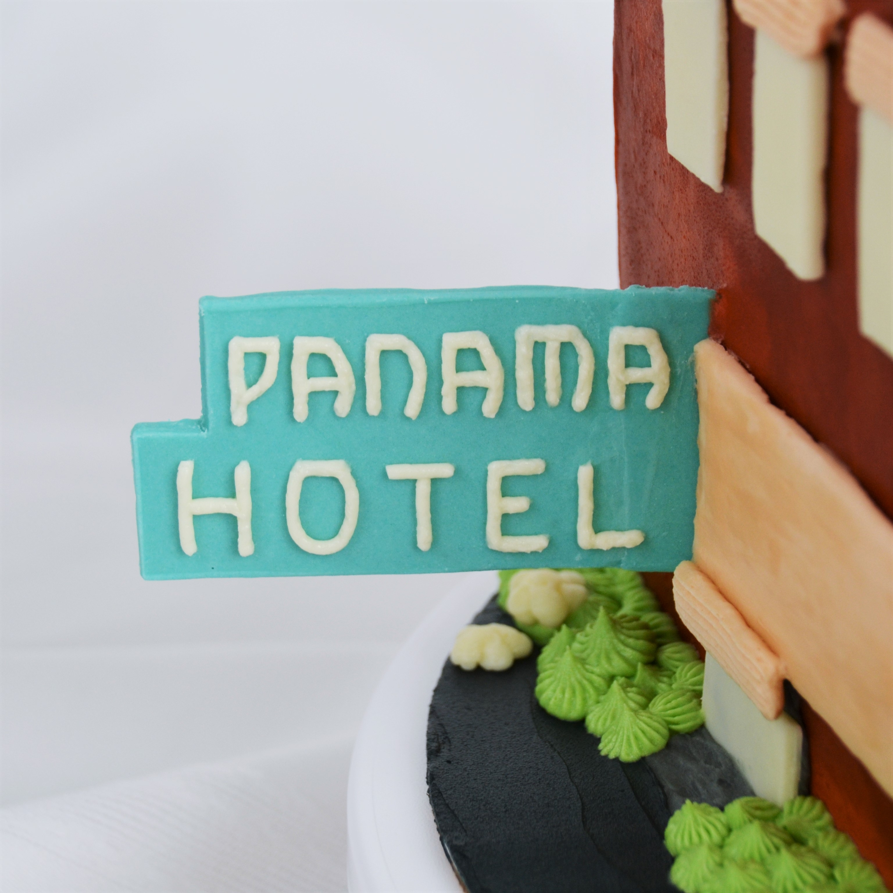

Published May 21, 2019 at 10:30 AM - Written by Lucy Jiang
Hey everybody! After a busy quarter of fulfilling cupcake orders and baking creative custom cakes, I decided to tie my passion for baking to my schoolwork and baked a cake to represent an important, unforgettable part of history.
Jamie Ford’s novel, Hotel on the Corner of Bitter and Sweet, deeply analyzes the conflict and clash between American, Chinese, and Japanese cultures during World War II. As a young Chinese-American boy, protagonist Henry Lee faces the realities of discrimination and erasure of identity during World War II – throughout his youth, he wears a button that states his ethnicity in an attempt to avoid prejudice for being Japanese. While Henry finds a friend in Keiko Okabe, a Japanese-American girl at his school who faces similar struggles, his father’s traditional cultural prejudices against the Japanese keeps them apart. Furthermore, Keiko’s entire family experiences brutal and unjust internment and other hardships brought upon the entire Japanese-American community as a result of Executive Order 9066. These cultural tensions drive large groups of individuals apart, preventing the formation of a cohesive, multi-ethnic community in Seattle.
The title of the novel, Hotel on the Corner of Bitter and Sweet, focuses on a dichotomy that seems to exist throughout all of history – the unavoidable bitterness of loss, defeat, and prejudice that so starkly contrasts the sweetness of reunion, victory, and justice. Throughout the book, Henry and Keiko experience discrimination as the two Asian-American students at their school, who “taunted… sneered and glared suspiciously” (21) at them in the cafeteria. As Keiko and her family are sent away to Camp Minidoka, the bitterness of Japanese internment and Henry’s growing conflict with his traditional father are interspersed with the sweetness of Henry and Keiko’s love and his genuine promises to “‘[wait for her] when this is all over’” (232). Despite his promises and best intentions, Henry and Keiko fall out of contact for many, many years.
Henry soon finds companionship with Ethel Chen, the “young [Chinese] woman from the post office” who watched Henry send Keiko letter after letter with no reply. Henry’s bitterness – for him, “not knowing [why she didn’t reply] hurt almost as much as losing her” (257) – is augmented by the sweetness of his new relationship with Ethel, one that fosters new experiences but cannot replace his aching memories. He never takes Ethel to the Black Elks Club, for example, as “that memory was special to Henry, something he couldn’t easily share” (259). Despite his nagging hope to be reunited with Keiko and the short duration of Henry and Ethel’s relationship, Henry ultimately proposes to Ethel on V-J Day, the day on which the Japanese surrender World War II. This sweet, spontaneous moment of engagement is celebrated by onlookers as “the crowd roared its approval, and men and women tilted their glasses back and toasted her” (261). However, as always, the sweetness of celebrating love and commitment is tinged with a bit of sadness as Henry momentarily gives up on his long-awaited reunion with Keiko, and even more so, the sadness behind Henry’s angry farewell to his dying father. Upon his deathbed, his father confesses to intercepting letter after letter that Henry wrote to Keiko, thinking that it would be in his son’s best interests. Although Henry never has a chance to reconcile conflict with his parents, after his father’s death, Henry understands his duty to help his mother with funeral planning, prepare for his upcoming trip to China, and “find a suitable engagement ring. Something he would do with a certain sadness. He’d do what he always did, find the sweet among the bitter” (265). Through Henry’s relationships with Ethel and Keiko, and through his tumultuous relationship with his father, this book highlights the unrelenting push and pull between bitter and sweet moments.
After experiencing prejudice and discrimination throughout his youth, Henry eventually seeks justice with the bullies who tormented him in grade school. While Chaz becomes “bitter and defeated… the way he’d look for the rest of his life” (209), Henry grows stronger and more resilient to life’s hardships. The sense of satisfaction that Henry experiences upon realizing his strength is, effectively, the sweet revenge that he takes upon these bullies. When Henry and Chaz encounter each other on the corner of South King, Henry realizes that he is “actually looking down an inch or two” (247) on his former tormentor. Chaz ends up cowardly backing away, “more pathetic and annoying than menacing” (247). Henry’s maturity and confidence, as well as his height, represent his mental and physical growth throughout the ages, symbolizing the transition from his bitter and unjust childhood to a sweeter life where he can forge his own path.
Furthermore, the strain and pent-up bitterness between Henry and his father continues to grow until his father finds Keiko’s belongings hidden under Henry’s bed – ultimately his father disowns him by saying, “‘If you walk out that door – if you walk out that door now, you are no longer part of this family. You are no longer Chinese. You are not part of us anymore’” (185). This sense of resentment stays with Henry’s father until his dying breath, and he is never able to forgive his son for disobeying his wishes. However, as years tick by, Henry is able to reconnect with Keiko with the help of his once-distant son. The sweetness between Henry and Marty, and Marty’s kind gesture of purchasing a “round-trip ticket to New York City” (276), reminds Henry of his past. His son and new daughter-in-law allow Henry the opportunity to reconnect with Keiko in New York City, finally allowing himself to “‘find what’s missing… to find what [he] let go’” (276). As the saying goes, distance and time make the heart fonder. Henry’s long-awaited reunion with Keiko is a sweet conclusion to a story filled with harsh family conflicts and discrimination, illustrating the importance and interdependence of both bitter and sweet experiences in life.
To capture the racial and cultural differences within the book, I baked a cake that looks like the Panama Hotel, the namesake of the novel. Not only is the hotel the spot where an older Henry remembers his youth, but it’s described as a “gateway between Seattle's Chinatown and Nihonmachi, Japantown” (3). I chose to create three distinct flavored layers to highlight the stark differences that separate American, Chinese, and Japanese cultures.
While baking the cake, I referenced recipes from How to Cake It, Sally’s Baking Addiction, Real Simple, and Flavor and Fortune. These cakes are delicious, of course, but they are also sturdy, which is important when creating a tall, double barrel cake. To feed the 24 students in the class, I calculated that I would need to bake around 6 layers, and used 6” square pans to do so.
I mixed up How to Cake It’s ultimate vanilla cake recipe for the top third of the cake, as vanilla is a classic, timeless American cake flavor. Using the same batter, I folded in chopped peanuts, dried coconut, and topped the cakes with sesame seeds prior to baking to emulate the flavors of dragon’s beard candy. The candy is one of the confections that Samantha makes for Henry later on in the book, showcasing its importance in bridging the gap between American and Chinese cultures. The recipe for the bottom third of the cake is a matcha batter from Real Simple, and I flavored it with matcha to both reference Samantha’s ice cream choice and acknowledge the opening of a Tea House on the main floor of the hotel.
Matcha in its purest form is rather bitter, which is yet another reference to the title of the book, and this indicates the bitterness of the Japanese-American experience during World War II. However, matcha can also be combined with small amounts of flavorings and sugars to become much sweeter and more palatable. While Keiko serves Henry “a glass of iced green tea, with ginger and honey from the taste of it” (285), I chose to use granulated sugar because it has important properties such as aerating a batter and keeping cakes fluffy, which does not always happen with honey. Furthermore, I chose to omit ginger from the recipe to highlight the pure matcha flavor.
In the bottom few layers of the cake, I also created a small “secret chamber” and filled it with small candies, signifying the hidden belongings in the basement of the hotel. I chose to use Skittles candies and rainbow sprinkles to represent the colorful, yet obscured past of the Japanese immigrants. The technique for the “secret chamber” is featured in quite a few of How to Cake It’s video tutorials, and even though it was my first time trying this technique, it wasn’t too difficult to do.
For structural purposes, I chose to use plain vanilla buttercream to layer and frost the cake, as buttercream is extremely sturdy. I’ve made buttercream so many times now that I do it by eye, but the recipe on which I originally based my measurements is from Sally’s Baking Addiction! I like to use salted butter in my buttercream because it prevents the frosting from getting too sweet, although I would be careful and make sure that there aren’t pockets of unmixed salted butter.
The exterior of the cake is decorated as closely as possible to the appearance of the Panama Hotel, and I used images of the hotel as it currently stands, as well as photographs from the 1940s, as references while decorating.
While a cake may not be a traditional way of representing these ideas, I hope that the elements that I incorporated, such as distinct flavors, a symbolic basement chamber, and exterior decorations convey the many cultural tensions between American, Chinese, and Japanese communities during the 1940s. I thoroughly enjoyed reading Hotel on the Corner of Bitter and Sweet, brainstorming ideas for how to represent the different cultures, and conducting research to make this cake and its flavors as authentic as possible. I’m deeply grateful to have had the opportunity to combine my passion for baking with my education, and I hope that the class enjoys the cake!
 